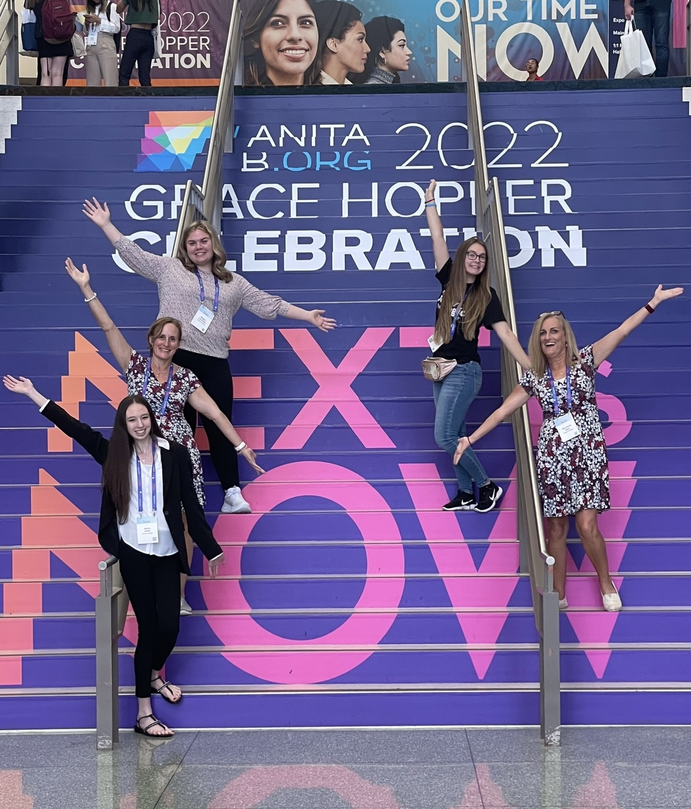

Clubs
Computer Science Club
We provide an educational and fun outlet for students to pursue their interest in computer science outside the classroom. Our club sponsors a number of guest speakers and numerous events throughout the year, including programming contests and various shows. We are actively involved in the open source movement and a proud supporter of the Linux operating system. We encourage all majors to join.
WHAT WE DO
The Siena College Computer Science Club provides an educational and fun outlet for students to pursue their interest in computer science outside the classroom. The computer science club meets on the first Wednesday or Thursday of each month and discusses movie nights and trivia nights, all of which are suggested by club members. The club also sponsors a number of guest speakers and numerous events throughout the year, including programming contests and various shows. The club is actively involved in the open source movement and a proud supporter of the Linux operating system. We encourage all majors to join in!
Club OfficersAdvisor: Darren Lim
President: Chris Sorros
Vice President: Mark Vera
Treasurer: Athena Varghese
Secretary: Matthew Dasilva
Women in Computing Club
The Women in Computing Club strives to actively involve and engage women into the Computer Science field. We facilitate networking opportunities for students to connect with accomplished professionals at various Computer Science conferences, and we also host a variety of events including guest speakers and networking lunches. By becoming a member of the Women in Computing Club, you’ll become an integral part of a supportive community that empowers women in the field of Computer Science.
Club OfficersAdvisor: MaryAnne Egan and Jami Cotler
President: Alexis Smith
Vice President: Maggie Frechette

Cyber Security Club
The Siena Cyber Security Club's purpose is to:
- Heighten cyber security awareness on campus and the community
- Organize and sponsor cyber security events
- Promote cyber security careers and courses
- Conduct cyber security awareness related activities
- Participate in cyber security competitions
Club OfficersAdvisor: John Armitage
President: Sean Donnelly
Vice President: Fahad Ansar
Treasurer: Matthew Dasilva and Athena Varghese
Secretary: Julien Niles